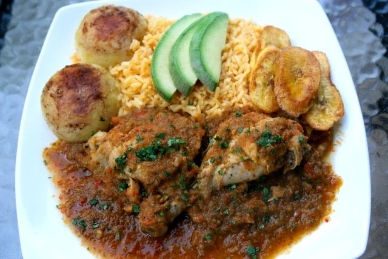

Seco de pollo

Ingredientes
- 4 a 5 libras de pollo o gallina una combinación de presas diferentes
- 2 cucharaditas de comino molido
- 2 cucharaditas de achiote molido también puede usar semillas de achiote, en este caso se las pone con el aceite hasta que salga el color
- 2 a 3 cucharadas de aceite
- 1 cebolla de 8 a 10 onzas, cortada en trozos
- 6 a 8 dientes de ajo
- 1 a 2 tazas de cerveza no muy oscura, ajuste de acuerdo al espesor que usted prefiera (también se puede usar chicha de jora, caldo de pollo, vino blanco, o cidra de manzana)
- 1 taza de jugo de naranjilla lulo, puede usar el concentrado congelado, o puede usar jugo fresco de naranja o maracuyá (puro sin azúcar) en caso de no encontrar jugo de naranjilla
- 4 a 6 tomates aproximadamente 1 libra, cortados en cuartos
- 2 pimientos de cualquier color, sin semillas y cortados en trozos
- Opcional: 1 aji o chile picante o aji en polvo al gusto
- 1 manojo de cilantro o culantro guarde un poco bien picadito para añadir al final
- 1 manojo de perejil- solo las hojas guarde un poco bien picadito para añadir al final
- 2 cucharaditas de orégano seco
- Jugo de una naranja opcional
- Sal y pimienta al gusto1 taza de jugo de naranjilla lulo, puede usar el concentrado congelado, o puede usar jugo fresco de naranja o maracuyá (puro sin azúcar) en caso de no encontrar jugo de naranjilla
Preparacion
- Espolvoree las presas de pollo con el comino molido, el achiote molido, sal, y pimienta.
- Licue la cerveza y el jugo de naranjilla con los trozos de tomate, cebolla, dientes de ajos, pimientos, aji o chile si lo desea usar, cilantro, perejil, y orégano hasta obtener un puré o una salsa espesa.
- Caliente el aceite en una olla grande – en caso de usar las semillas de achiote, se las agrega al aceite a fuego bajo hasta que salga el color, y se quitan las semillas antes de agregar el pollo).
- Dore las presas de pollo (antes solía hacer un refrito con un poquito de cebolla picada y condimentos antes de dorar el pollo – si lo desea lo puede preparar así o seguir con la versión simplificada).
- Añada la mezcla licuada, haga hervir, y cocine a fuego lento hasta que la carne de pollo este muy suave, casi una hora (dependiendo de si es carne de pollo o carne de gallina).
- Si el pollo esta tierno pero la salsa aún no se ha espesado a su gusto, puede retirar las presas, y cocinar la salsa a fuego medio/alto hasta que se espese, unos 10 a 15 minutos. En este momento también la puede probar y ajustar la sal.
- Personalmente me gusta agregarle un poco de jugo de naranja recién exprimido para equilibrar cualquier sabor amargo de la cerveza. Cuando la salsa este al espesor de su preferencia, vuelva a poner las presas de pollo, y agregue el perejil/cilantro picado que guardo.
- Servir con arroz amarillo, plátanos maduros fritos, aguacate, papas, ensalada, etc.
“Cocinar no es solo preparar alimentos, es dar amor con cada ingrediente y crear recuerdos con cada sabor.